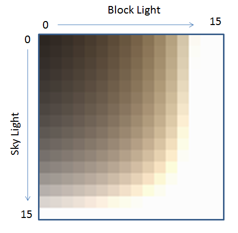
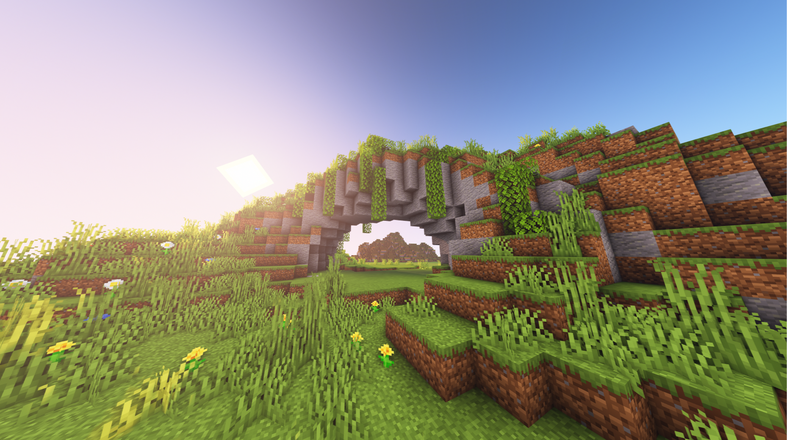
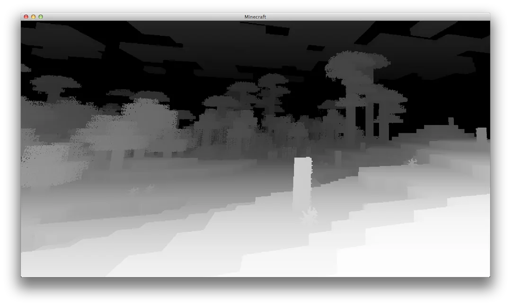

ExtendedShader
在阅读本页前，请确保你已了解 Minecraft Core Shader。
Photon2 和 LDLib2 使用 ExtendedShader 扩展了原版着色器，添加了：
- 几何着色器 (
attach) 支持 - 额外的采样器和 uniform 变量
📦 如何使用
ExtendedShader JSON 与原版几乎相同。
这里展示一个使用 Texture Material 的示例。
{
"vertex": "photon:particle",
/*
"geometry": "<namespace>:<name>.gsh" // (1)
*/
"fragment": "photon:hdr_particle",
"samplers": [
{ "name": "Sampler2" },
// 自定义采样器
{ "name": "Texture" }
],
"uniforms": [
{ "name": "ModelViewMat", "type": "matrix4x4", "count": 16, "values": [1,0,0,0,0,1,0,0,0,0,1,0,0,0,0,1] },
{ "name": "ProjMat", "type": "matrix4x4", "count": 16, "values": [1,0,0,0,0,1,0,0,0,0,1,0,0,0,0,1] },
{ "name": "ColorModulator", "type": "float", "count": 4, "values": [1,1,1,1] },
{ "name": "FogStart", "type": "float", "count": 1, "values": [0.0] },
{ "name": "FogEnd", "type": "float", "count": 1, "values": [1.0] },
{ "name": "FogColor", "type": "float", "count": 4, "values": [0,0,0,0] },
{ "name": "FogShape", "type": "int", "count": 1, "values": [0] },
// 自定义 uniform 变量
{ "name": "DiscardThreshold", "type": "float", "count": 1, "values": [0.01] },
{ "name": "HDR", "type": "float", "count": 4, "values": [0,0,0,1] },
{ "name": "HDRMode", "type": "int", "count": 1, "values": [0] }
]
}
- 如有需要可附加几何着色器。
// 必须使用 330+ 版本
#version 330 core
#moj_import <fog.glsl>
// Photon2 顶点着色器辅助库
#moj_import <photon:particle.glsl>
uniform sampler2D Sampler2;
uniform mat4 ModelViewMat;
uniform mat4 ProjMat;
uniform int FogShape;
out float vertexDistance;
out vec2 texCoord0;
out vec4 vertexColor;
void main() {
ParticleData data = getParticleData();
gl_Position = ProjMat * ModelViewMat * vec4(data.Position, 1.0);
vertexDistance = fog_distance(data.Position, FogShape);
texCoord0 = data.UV;
vertexColor = data.Color * texelFetch(Sampler2, data.LightUV / 16, 0);
}
#version 150
#moj_import <fog.glsl>
uniform sampler2D Texture;
uniform vec4 ColorModulator;
uniform float FogStart;
uniform float FogEnd;
uniform vec4 FogColor;
uniform float DiscardThreshold;
uniform vec4 HDR;
uniform int HDRMode;
uniform float Bits;
in float vertexDistance;
in vec2 texCoord0;
in vec4 vertexColor;
out vec4 fragColor;
void main() {
float bits = max(Bits, 1.0);
vec2 uv = (floor(texCoord0 * bits) + 0.5) / bits;
vec4 color = texture(Texture, uv) * vertexColor * ColorModulator;
if (color.a < DiscardThreshold) discard;
if (HDRMode == 0) {
color.rgb += HDR.a * HDR.rgb;
} else {
color.rgb *= HDR.a * HDR.rgb;
}
fragColor = linear_fog(color, vertexDistance, FogStart, FogEnd, FogColor);
}
与原版粒子着色器的区别：
🎯 处理顶点数据
不同的 FX 对象和渲染器设置（如 GPU Instance、Additional GPU Data）可以改变顶点类型和布局。
Photon2 提供了一个辅助库，通过宏自动解析并转换输入顶点数据为可访问的格式。
更多信息：顶点格式
// 需要 GLSL 版本 330+
#version 330 core
/*
struct ParticleData {
vec3 Position;
vec4 Color;
vec2 UV;
ivec2 LightUV;
vec3 Normal;
};
ParticleData getParticleData() {
// (1)
}
*/
void main() {
ParticleData data = getParticleData();
vec3 position = data.Position;
vec4 color = data.Color;
vec2 uv = data.UV;
ivec2 lightUV = data.LightUV;
vec3 normal = data.Normal;
}
- 内部实现，详见顶点格式。
实现细节
在顶点着色器中：
- 确保
#version为 330 或更高。 - 导入 Photon2 顶点库：
#moj_import <photon:particle.glsl> - 通过
getParticleData()访问数据——无需手动处理内部布局。 - Photon2 支持传递额外的 GPU 顶点数据（例如粒子生命周期、速度）。 参见：Additional GPU Data
🎨 扩展采样器
Photon2 提供了超出原版的额外内置采样器。
当在 JSON 中声明这些采样器时，它们不会显示在 Inspector 中。
| 采样器名称 | 描述 | 预览 |
|---|---|---|
Sampler2 |
光照贴图 |  |
SamplerSceneColor |
世界颜色 |  |
SamplerSceneDepth |
世界深度 |  |
SamplerCurve |
曲线采样器 | - |
SamplerGradient |
渐变采样器 | - |
{kind=link}
{kind=link}
{kind=link}
📈 SamplerCurve / SamplerGradient
{kind=link}
特殊采样器，仅在分配了曲线或渐变时生效。
Photon2 将它们编码为 128×128 纹理，以便在着色器中采样。
#moj_import <photon:particle_utils.glsl>
/* 内部实现
const float INV_TEX_SIZE = 1.0 / 128.0;
const float MAX_U = 1.0 - 0.5 * INV_TEX_SIZE;
float getCurveValue(sampler2D curveTexture, int curveIndex, float x) {
return texture(curveTexture, vec2(clamp(x, 0.0, MAX_U), (float(curveIndex) + 0.5) * INV_TEX_SIZE)).r;
}
vec4 getGradientValue(sampler2D gradientTexture, int gradientIndex, float x) {
return texture(gradientTexture, vec2(clamp(x, 0.0, MAX_U), (float(gradientIndex) + 0.5) * INV_TEX_SIZE));
}
*/
uniform sampler2D SamplerCurve;
uniform sampler2D SamplerGradient;
void main() {
float value = getCurveValue(SamplerCurve, 0, x);
vec4 color = getGradientValue(SamplerGradient, 0, x);
}
使用方法：
- 导入辅助库：
- 调用
getCurveValue()和getGradientValue()获取值。
🛠 扩展 Uniforms
Photon2 在原版核心着色器的基础上添加了更多内置 uniform 变量。
📋 原版内置 Uniforms
| 名称 | 类型 | 描述 |
|---|---|---|
ModelViewMat |
mat4 | 模型视图矩阵 |
ProjMat |
mat4 | 正交投影矩阵（宽=窗口，高=窗口，近=0.1，远=1000） |
ScreenSize |
vec2 | 帧缓冲区宽度和高度（像素） |
ColorModulator |
vec4 | 最终颜色乘数 |
FogColor |
vec4 | 雾颜色与密度（alpha = 密度） |
FogStart |
float | 雾起始距离 |
FogEnd |
float | 雾结束距离 |
FogShape |
int | 雾模式 |
GameTime |
float | 标准化游戏时间（0–1，每 20 分钟循环一次） |
GlintAlpha |
float | 闪光强度（0–1） |
📋 Photon2 内置 Uniforms
| 名称 | 类型 | 描述 |
|---|---|---|
U_CameraPosition |
vec3 | 摄像机世界坐标 |
U_InverseProjectionMatrix |
mat4 | 预计算的 ProjMat 逆矩阵 |
U_InverseViewMatrix |
mat4 | 预计算的 ModelViewMat 逆矩阵 |
U_ViewPort |
vec4 | 视口(x, y, w, h) 自 2.1.3.a 起 |